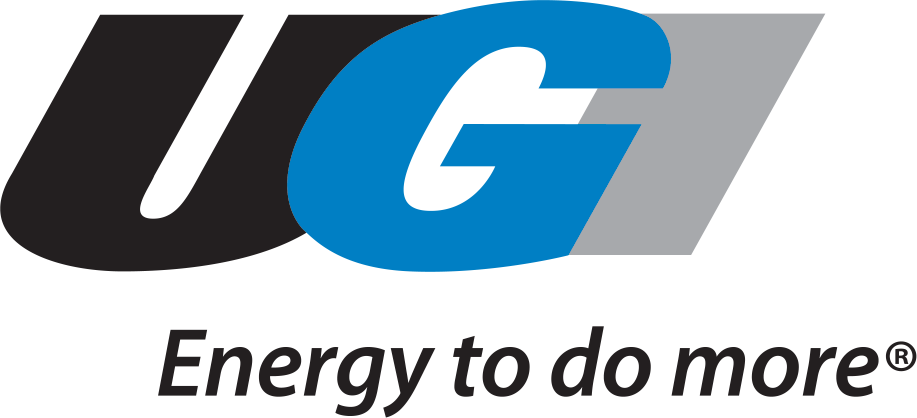
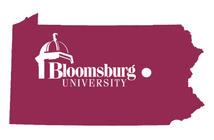

I live near Philadelphia, Pennsylvania.
I've been working in my current position as Digital Marketing Coordinator for UGI Utilities for over one year. I started out in the company about two years ago as a Call Center Representative and moved into Marketing a year later.
My primary role involves web and graphic design. I also assist with other marketing tasks, mostly digital, including email and social media.
I have over 7 years of customer service experience from working as a Shift Supervisor for CVS for 6 years and a year at the utility call center.
I attended Bloomsburg University and got my Bachelor's Degree in Mass Communications with a concentration in Public Relations. My classes included a mixture of mass media, including web design, video production, public relations, and journalism.
During college, I was the Social Media Intern for the company I currently work for.
My daily tasks included managing social media sites and writing future post material to be scheduled into Hootsuite or on the WordPress blog.
